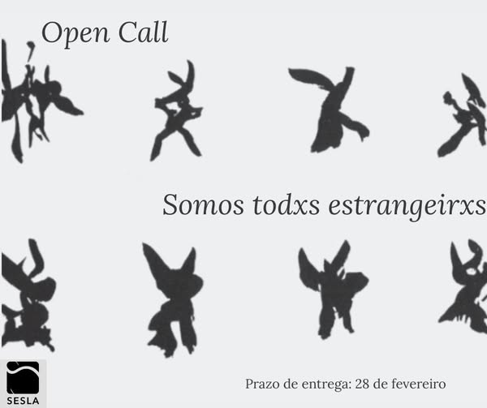

A SESLA foi fundada em 1997, com o importante legado cultural e académico de promover a cultura literária e escrita.
Workshops, clube do livro, exposições, leituras de poesia, música ao vivo, projeção de vídeo e arte — um espaço onde a palavra se encontra com todas as outras formas de expressão.
Somos um espaço de partilha e criação — onde a beleza se descobre, se amplia e se reinventa.
Uma celebração da beleza nas suas múltiplas escalas — do microscópico ao simbólico, da cor à palavra, da ciência à arte.
Inspirado pela fotomicrografia, exploramos a estética do invisível: formas, texturas e cores que habitam dimensões ocultas e revelam que o minúsculo pode ser grandioso.
Leituras inspiradas na associação entre vogais e cores, com textos de Arthur Rimbaud, Alphonsus de Guimaraens, Charles Baudelaire, Yves Bonnefoy e João Damasceno.
Poemas e leituras sobre o imaginário do negro — Dinis Moura, Marin Sorescu, Júlio Pomar, Roberto Juarroz, Ruy Belo.
Natureza, memória e paisagem — música medieval de Dom Dinis e poemas de Paulo Leminski, Maria Velho da Costa, Herberto Helder, Elizabeth Bishop, Alexandre O'Neill.
Música de Brian Eno e leituras que exploram o imaginário do azul — Sylvia Plath, Constantine P. Cavafy, Manuel de Castro, excertos de Michel Pastoureau.
Secções em construção dedicadas ao branco, vermelho e amarelo — novos textos e leituras a acrescentar.

Uma chamada de trabalhos artísticos e académicos que versem sobre o tema «Somxs Todxs Estrangeirxs».
Entende-se por «ser estrangeirx» um sentimento que vai além do simples transpor fronteiras — que pode ser expresso através da solidão, mesmo no seio de uma sociedade; sentimentos de estranhamento, inadaptação, inadequação e rejeição.
Um ser humano pode sentir-se estrangeiro mesmo na sua própria terra. A SESLA lança este desafio para além da comunidade académica e para além da fronteira. Todos podem participar, independentemente de idade, idioma ou nacionalidade.
Formatos aceites: Artigo, conto, crónica, poema, ensaio, crítica, obras visuais e outras formas artísticas.
Publicação: Revista em suporte físico, digital e online.
Envio de trabalhos: sesla.coimbra@gmail.com